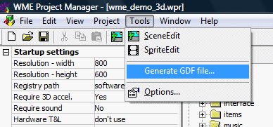
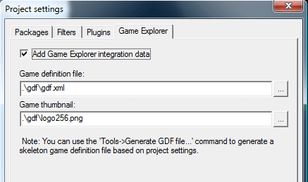
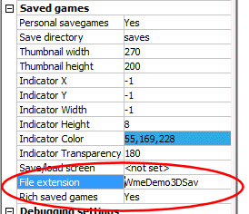
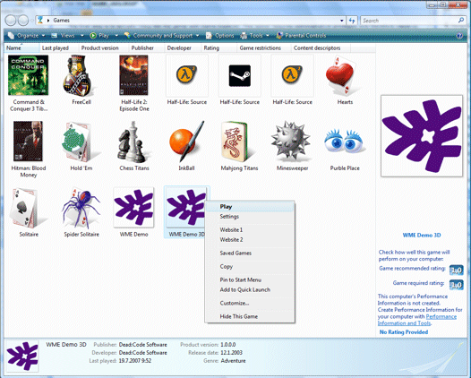
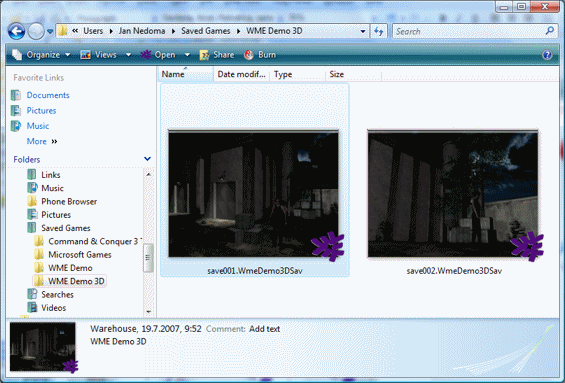

Microsoft's new consumer operating system brought many changes related to security and game integration. Both these areas affect game development in WME. This chapter will guide you through all the possible problems and new WME's abilities related to Windows Vista.
WME tools and the engine itself work fine in Windows Vista. There's one possible problem you should be aware of, though. In Windows Vista even if the user has administrative privileges, under normal circumstances the rights are lowered to normal user. This means the user doesn't have write access to the "Program Files" directory. For this reason, do NOT store your WME project folder in Program Files.
When creating a new project in ProjectMan, the project is created in the "Documents" folder by default, which is fine. Unfortunately older versions of WME defaulted to Program Files. Therefore, if your project is in still stored Program Files, and you are intending to upgrade to Windows Vista, please move the entire project folder elsewhere (preferably to your Documents folder), otherwise ProjectMan might fail to compile the game.
In ProjectMan, in project settings, there is a property called "Personal saved games". It specifies, whether the game will store saved games directly in the game directory or if it will use the user's personal folder. For the reasons stated above you should ALWAYS set the "Personal saved games" to "Yes". Otherwise if the user installs your game to Program Files in Windows Vista, the game will be unable to save games (actually, WME is smart enough to switch to personal saved games folder if the game directory isn't writeable, but the point stands :).
If the "Personal saved games" option is enabled, the saved games are stored:
There is a new feature in Windows Vista called "Game Explorer". It serves as a centralized access point for all games installed in Windows. WME provides support for integrating your game with Game Explorer, but the process requires several steps.
To be successfully integrated with Game Explorer, the game must provide so called "Game definition file" (GDF). It's an XML file containing description of your game. The complete XML schema for GDF files is available at the Microsoft website. However, WME ProjectMan can generate a skeleton GDF file for you, based on your game settings. To generate GDF file skeleton, open the Tools menu and click "Generate GDF file...".

This command will generate an XML file containing some basic information about your game. You will probably want to edit the file afterwards to change some of the pre-generated values, such as the developer/publisher name, game version etc. You shouldn't change the "gameID" value though, it's the unique identifier of your game.
For advanced editing of the GDF file, such as specifying an ESRB rating, you'll need to install Microsoft's "Game Definition File Editor" tool, which is part of the DirectX Software Development Kit. Also note that for the ESRB rating to be displayed in Game Explorer the game executable needs to be digitally signed.
Once you generated the GDF file, you need to tell ProjectMan to insert the GDF into the game executable. You do this in the project settings window (Project -> Project Settings...) on the "Game Explorer" tab.

Here you can assign the generated GDF file as well as a thumbnail image. The image is used by Game Explorer to display your game. It should be a 256x256 pixels big PNG file and it can contain transparency. If you don't specify a thumbnail image, WME logo is used by default.
After specifying these options, whenever you compile the game in ProjectMan, the GDF file and the thumbnail image are injected into game executable, making it ready for Game Explorer integration.
Another step in preparing the game for Game Explorer integration are so called "rich saved games". Windows Vista is capable of displaying saved games directly in Windows Explorer, complete with thumbnails and saved game description.
To prepare your game for this, two options need to be enabled in project settings in ProjectMan. Firstly, you need to set the "Rich saved games" property to "Yes". Secondly, you need to specify a file extension to be used for saved games. This extension needs to be unique for your game (i.e. don't us generic extension like "sav", but rather something like "MyGameSav"). Once the game is integrated with Game Explorer, it's associated with this file extension, so the user can double-click the saved game in Windows Explorer, which will run the game and load the saved game.

The final step is to actually integrate the game with Game Explorer. This action requires administrative privileges and therefore needs to be done at install time (the game installer typically has administrative privileges). All you need to do is to call the game executable from your installer, specifying certain command-line switches, and the engine will integrate the game with Game Explorer automatically.
To integrate game with Game Explorer, the installer of your game needs to call a command like this:
"c:\Program Files\MyGame\Game.exe" -gameexplorer add
The above command will install the game with Game Explorer for all users. Alternatively you may want to only install the game for current user. The command would then look like this:
"c:\Program Files\MyGame\Game.exe" -gameexplorer add-current
Similarly, when uninstalling the game, you should unregister the game from Game Explorer first. To do so, your uninstaller needs to call the following command:
"c:\Program Files\MyGame\Game.exe" -gameexplorer remove
Note: For these commands to work properly the game files need to be installed. It means you should call the "add" command as one of the last steps of the installation (after the game files have been copied to the user's computer) and the "remove" command needs to be called before the game files are removed.
Most installers allow you to call external programs during installation. For example when using InnoSetup, your install script would contain something like this:
[Run]
Filename: "{app}\game.exe"; Parameters: "-gameexplorer add"
[UninstallRun]
Filename: "{app}\game.exe"; Parameters: "-gameexplorer remove"
Please note that you can safely call these command even when installing the game in a different Windows version than Vista. In Windows versions earlier than Windows XP the calls are ignored. In Windows XP the engine will write special values to Windows Registry and if the user later upgrades to Vista, your game will be automatically added to Game Explorer during the upgrade process.
Once the game appears in Game Explorer, it provides so called "game tasks". WME installs the following game tasks: Play game, Settings, Website 1, Website 2. You can control the labels of these actions by modifying the string table of your game. If you don't specify any website, the Website game tasks aren't installed.
To conclude, you need to do the following steps to integrate your game with Game Explorer in Windows Vista:
If all the steps went right, your game should appear in Game Explorer after installation:

And if you select the "Saved Games" command, you should see the saved games of your game, complete with thumbnails and descriptions. It you double-click the saved game, it should start the game and automatically load the selected saved game:
